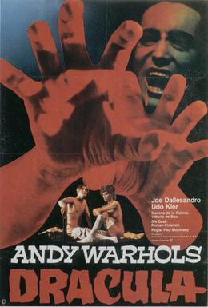

Paul Morrissey
1974
106 minutes
This film was released in the United States as Andy Warhol's Dracula, but he didn't seem to have an enormous amount to do with it besides slapping his name on it, so don't worry. This isn't going to be 76 minutes of a close up of Dracula's bare ass or anything like that. It's actually a pretty standard schlocky seventies vampire movie, but with some endearing casting choices such as Udo Kier and Joe Dallesandro with his authentic Transylbrooklyn accent. There's plenty of sex in this, so if you're hoping to see a bunch of sexy women vampires vamping it up you're in for a treat.
You've always been a bit of a horror nerd. You watch plenty of movies now that people consider pretentious, but you've seen more than your fair share of cheesy horror films. You don't try very hard to make it a huge part of your Identity, but you've always been drawn by the goofy lure of the dark side. Even as a kid you had numerous vinyl records featuring scary sound effects or songs like "The Monster Mash". You had one album in particular called "Famous Monsters Speak" which consisted of Dracula and Frankenstein delivering surprisingly eloquent monologues. Dracula addresses the listener in an affably-evil manner as his presumed next victim. Frankenstein's as you recall it purports to be a found footage recording of Frankenstein's monster coming to life. He ends up smashing the lab in a rage while he threatens and curses Dr. Frankenstein as his creator for giving him life in a weirdly Miltonian manner.
One of your favorite vampire-related songs on these vinyl albums was a tune by John Zacherle, a Philadelphia TV horror host who would dress up as a ghoul and present horror films to his viewing audience. His novelty song "Dinner with Drac" had its lyrics in the form of horror-themed limericks recited as a sort of sprechgesang, such as:
A dinner was served for three
At Dracula's house by the sea
The hors d'oeuvres were fine
But I choked on my wine
When I learned that the main course was me!
This early exposure led you to having a rather deranged obsession with limericks. You would later go on to publish two books of limericks on your own. One was a horror-themed book of limericks based on Cannibal Corpse lyrics with the title Hammer Smashed Verse - Limericks Inspired by Cannibal Corpse--the title being a reference to the infamous Cannibal Corpse song "Hammer Smashed Face". The other book of limericks, Clean Limericks for Children, is discussed elsewhere within these pages.
If you're making it a real late night double feature, you should really watch Andy Warhol's Flesh for Frankenstein next (in Section 52). Or continue following your whims to see where the streaming menus and algorithms lead you next.
Time to choose something different: